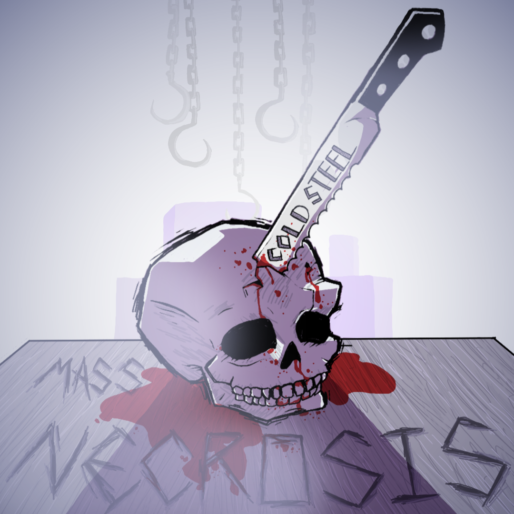

Band Info
Mass Necrosis is a small Metal project started in August 2023 by two brothers from Virginia. The members of Mass Necrosis- Jonathan (Guitar, Drums, and Vocals) and Timothy Brady (Bass, Backing Vocals) -strive to create music that captures an aggressive yet intriguing sound. After their 2024 release Cold Steel the band decided to continue looking into different Metal subgenres. This culminated with the gritty August EP Broken Ties. From here the band intends to expand on lyrical topics while experimenting with OSDM and Punk aesthetics.
|  | The band's first album, Cold Steel, was a first attempt at home recording and an amateur debut. This album is primarily influenced by a combination of Thrash Metal, Metalcore, and Deathcore. Despite the apparent variety in influences this album is consistently Heavy Metal throught and through. |
 | Broken Ties was a the follow up EP that came out later the same year. This time the DIY nature of the production was leaned in on and elaborated on with more experimentation and a far more raw sound. There's everything from Unblack Metal to Pop influence on this album with better produced choruses yet far heavier and faster riffage. |